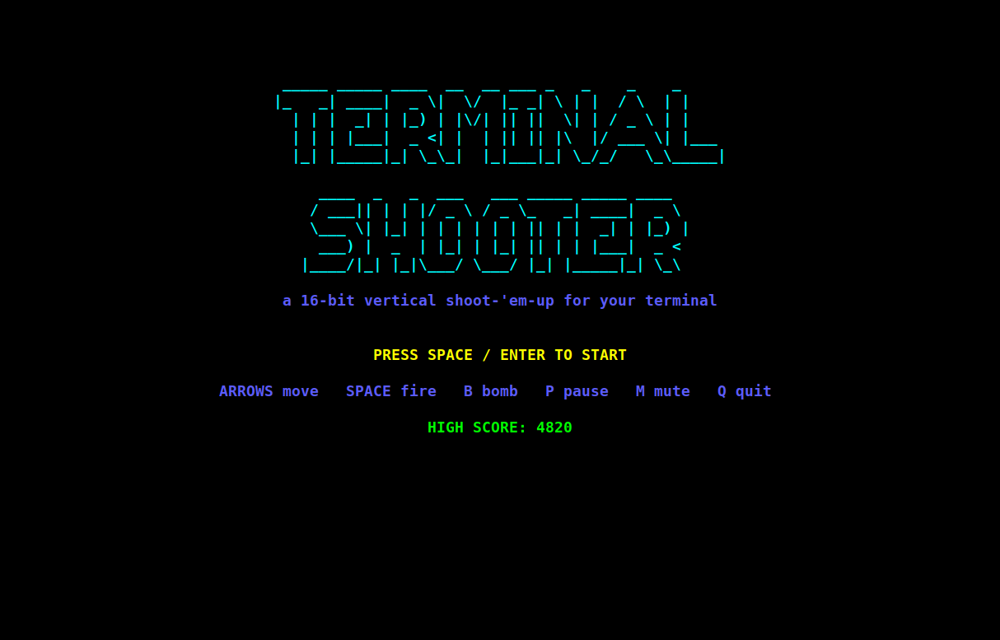
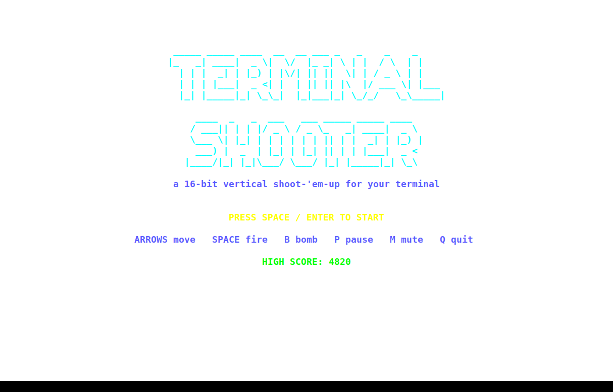
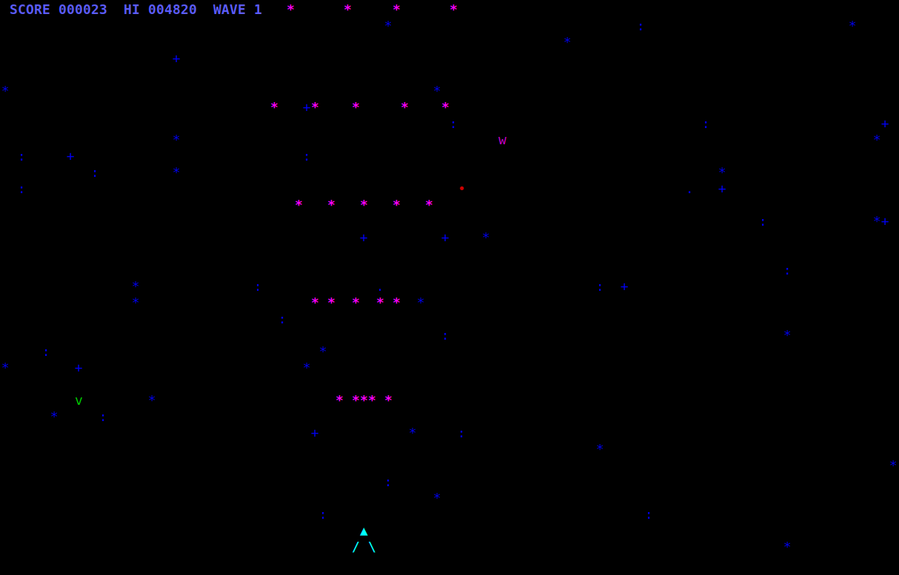
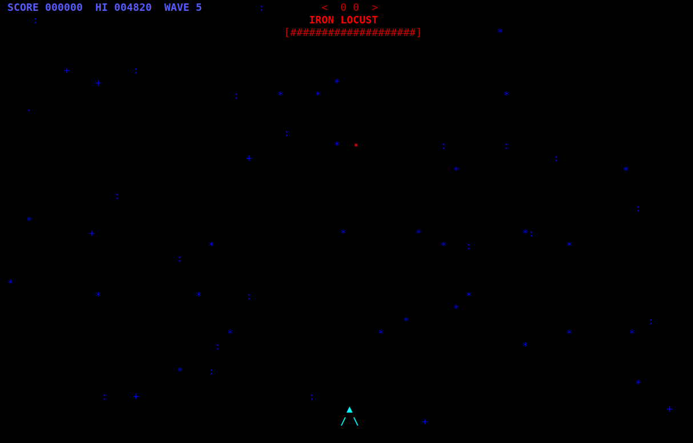

a 16-bit vertical shoot-'em-up for your terminal — pure Python stdlib, curses rendering, synthesized chiptune audio
real recorded session — an autoplay bot dodging, firing, and reaching a boss (see README for controls)




dark & light terminal themes — same game, same code, zero config